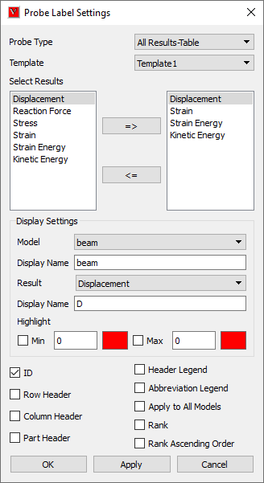
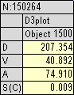
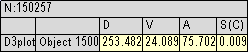

Probe Label Settings¶
This chapter explains how to set result attributes and filters for a better result query.
Probe Settings Panel

Probe Type |
Allows user to set a probe type to be queried. |
Template Type |
Allows user to set a display template type. |
Select Results |
Allows user to select what results should be displayed in the probe label. |
Model |
Lists actual model names |
Display Name (Model) |
Displays default display name for the current model and allows user to rename it for probe table display. |
Result |
Lists actual result names |
Display Name (Result) |
Displays default display name for the current result and allows user torename it for probe table display. |
ID |
Shows ID in the label. |
Row Header |
Enables row header. |
Column Header |
Enables column header. |
Part Header. |
Enables part header. |
Header Legend |
Shows/Hides header legend label.It displays legend for current model (single column). It displays multiple columns (models) when hotspot compare option is enabled and compared by order of results. |
Abbreviation Legend. |
Shows/Hides the result short name and full name table. |
Apply to All Models |
Applies the modifcations to all models. |
Rank |
Ranks and displays rank number based on label current derived result values. |
Rank Ascending Order |
Ranks in ascending if this option is checked, otherwise in discending. |
Template Types
Template 1:
Columns refer to model and part names and rows refer to CAE results.

Template 2:
Columns refer to CAE results and rows refer to model and part names.

Selection of Results
All results are selected for displaying by default. This is applicable only for All Result -Table probe type. Left side list box displays available results and right side list box displays the selected results. To add and remove selection, use the arrows => and <= buttons respectively.